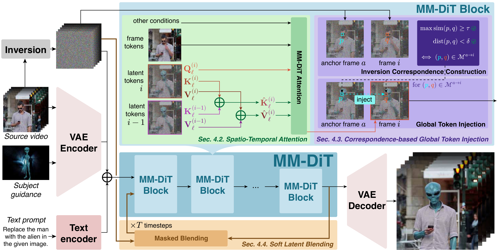

SourceEᴅɪᴛVɪᴅ
Attribute edit
“Change the elephant's color to blue.”
We introduce EditVid, a training-free framework for diverse video editing, supporting various instruction-guided and reference-guided edits in one framework, including style transfer, attribute modification, object insertion, part-level editing, and subject replacement.
“Change the elephant's color to blue.”
“Convert the video to black and white.”
“Change the turquoise waves to black.”
“Convert the video style to ukiyo-e.”
“Change the color of the fire to blue.”
“Change the black clothing to red.”
Video editing spans diverse editing paradigms, yet achieving high-quality instruction-guided and subject-guided editing within a single unified framework remains challenging. We introduce EditVid, a training-free framework combining sparse causal memory for local coherence, correspondence-based post-attention token injection for long-range identity preservation, and soft latent blending for edit locality. The same framework supports instruction-guided and reference-guided edits, including style transfer, attribute modification, object insertion, part-level editing, and subject replacement. On FiVE, EditVid achieves 78.16 FiVE-Acc, compared with 58.95 for the strongest evaluated training-free baseline, while obtaining competitive results on IVEBench. A user study further shows a 51.8% overall preference for EditVid over 7 competing methods.
EᴅɪᴛVɪᴅ operates only on visual latent tokens inside frozen MM-DiT-based image editors. Text and optional reference-image conditioning remain unchanged, preserving each editor's original semantic control.

Each frame attends to visual key–value states from the immediately preceding frame. This bounded context gives strong short-range coherence while avoiding unreliable long-range RoPE interactions.
Confidence- and cycle-consistent correspondences match each frame to an anchor. Matched visual representations are injected after attention for long-range appearance and identity preservation.
Timestep-dependent preservation weights are derived from source–edit trajectory discrepancies, retaining source content where needed while allowing the requested edit elsewhere.
EᴅɪᴛVɪᴅ is evaluated on fine-grained editing accuracy, traditional preservation metrics, IVEBench, and curated subject-guided and general video-editing sets.
Instruction-following accuracy on the FiVE benchmark. Higher scores indicate better agreement with the requested edit.
| Method | Foundation | Subject-guided | FiVE-YN ↑ | FiVE-MC ↑ | FiVE-U ↑ | FiVE-O ↑ | FiVE-Acc ↑ |
|---|---|---|---|---|---|---|---|
| Pyramid-Edit | Video | No | 33.67 | 54.01 | 56.36 | 31.31 | 43.84 |
| Wan-Edit | Video | No | 41.41 | 52.53 | 55.72 | 38.22 | 46.97 |
| FlowDirector | Video | No | 49.16 | 68.74 | 70.41 | 47.49 | 58.95 |
| StreamEdit (SF) | Video | No | 43.09 | 61.09 | 64.11 | 40.07 | 51.94 |
| DMT* | Image | No | 34.78 | 62.06 | 62.98 | 33.86 | 48.42 |
| VideoGrain† | Image | No | 30.50 | 43.97 | 44.30 | 30.17 | 37.23 |
| TokenFlow | Image | No | 19.36 | 35.51 | 36.68 | 18.18 | 27.43 |
| VidToMe | Image | No | 20.03 | 33.50 | 36.20 | 17.34 | 26.77 |
| AnyV2V | Hybrid | Yes | 30.62 | 45.42 | 48.96 | 27.09 | 38.02 |
| EditVid (Ours) | Image | Yes | 69.45 | 86.87 | 88.78 | 67.54 | 78.16 |
Video quality and fidelity on FiVE, comparing perceptual quality with preservation of the source content.
| Method | Foundation | Subject-guided | Str. Dist. ↓ | PSNR ↑ | LPIPS ↓ | MSE ↓ | SSIM ↑ | CLIP source ↑ | CLIP edit ↑ | NIQE ↓ | MEFS ↑ |
|---|---|---|---|---|---|---|---|---|---|---|---|
| Source Videos | — | — | 0 | ∞ | 0 | 0 | 100 | 24.59 | 19.87 | 6.33 | 93.76 |
| Pyramid-Edit | Video | No | 28.65 | 20.84 | 276.59 | 95.63 | 71.72 | 26.82 | 20.20 | 5.48 | 80.59 |
| Wan-Edit | Video | No | 12.53 | 25.57 | 94.61 | 41.84 | 82.55 | 26.39 | 21.23 | 6.54 | 89.43 |
| FlowDirector | Video | No | 21.56 | 22.74 | 107.09 | 65.20 | 81.68 | 27.93 | 22.00 | 4.98 | 81.22 |
| StreamEdit (SF) | Video | No | 10.27 | 28.47 | 49.84 | 21.88 | 87.52 | 26.95 | 21.73 | 4.38 | 90.93 |
| DMT* | Image | No | 85.95 | 14.71 | 404.60 | 372.78 | 51.64 | 26.66 | 21.44 | 5.24 | 82.30 |
| VideoGrain† | Image | No | 12.40 | 27.05 | 185.21 | 25.10 | 79.13 | 25.69 | 20.31 | 4.08 | 88.57 |
| TokenFlow | Image | No | 35.62 | 19.06 | 263.61 | 138.65 | 72.51 | 26.46 | 21.15 | 4.01 | 89.00 |
| VidToMe | Image | No | 22.37 | 21.15 | 263.91 | 88.75 | 70.69 | 26.84 | 21.05 | 4.68 | 90.06 |
| AnyV2V | Hybrid | Yes | 71.36 | 15.90 | 348.59 | 342.97 | 50.77 | 24.89 | 19.72 | 5.04 | 60.36 |
| EditVid (Ours) | Image | Yes | 17.10 | 25.97 | 218.71 | 36.37 | 83.31 | 28.83 | 22.40 | 4.17 | 85.31 |
Editing quality on IVEBench and curated subject-guided and general video-editing examples.
| Method | Training-free | Total | Quality | Compliance | Fidelity | Subject · PF ↑ | Subject · EQ ↑ | Subject · BC ↑ | General · PF ↑ | General · EQ ↑ | General · BC ↑ |
|---|---|---|---|---|---|---|---|---|---|---|---|
| LucyEditDev | No | 0.6220 | 0.8164 | 0.3679 | 0.6817 | 2.019 | 3.731 | 6.596 | 4.667 | 6.292 | 8.542 |
| Kiwi-Edit-5B | No | 0.6936 | 0.8101 | 0.5182 | 0.7524 | 3.115 | 4.327 | 6.596 | 8.000 | 8.229 | 9.458 |
| Qwen-Video-Edit | No | 0.6765 | 0.7752 | 0.5256 | 0.7286 | 1.865 | 2.654 | 7.654 | 7.812 | 7.979 | 8.958 |
| VidToMe | Yes | 0.6297 | 0.7826 | 0.4010 | 0.7056 | 4.308 | 5.942 | 5.923 | 3.875 | 5.938 | 5.250 |
| WANEdit | Yes | 0.6072 | 0.7973 | 0.2801 | 0.7441 | 5.962 | 6.654 | 8.942 | 5.125 | 6.625 | 8.375 |
| FlowDirector | Yes | 0.6264 | 0.7771 | 0.3765 | 0.7255 | 4.019 | 5.865 | 8.058 | 4.021 | 5.521 | 6.875 |
| StreamEdit | Yes | 0.6229 | 0.8238 | 0.2921 | 0.7530 | 4.077 | 6.673 | 8.288 | 5.250 | 7.000 | 9.792 |
| EditVid | Yes | 0.6847 | 0.8114 | 0.4587 | 0.7839 | 7.769 | 7.846 | 9.558 | 9.458 | 9.000 | 9.500 |
Select an edit to compare synchronized outputs from the source, representative baselines, and EᴅɪᴛVɪᴅ. Click any video to pause or resume the complete row.
@article{juvekar2026editvid,
title={One Editor, Many Edits: A Unified Training-Free Framework for Diverse Video Editing},
author={Adheesh Sunil Juvekar and Onkar Kishor Susladkar and Kiet A. Nguyen and Muntasir Wahed and Nabeel Bashir and Xiaona Zhou and Tianjiao Yu and Vedant Shah and Ismini Lourentzou},
journal={arXiv preprint arXiv:2609.04190},
year={2026}
}